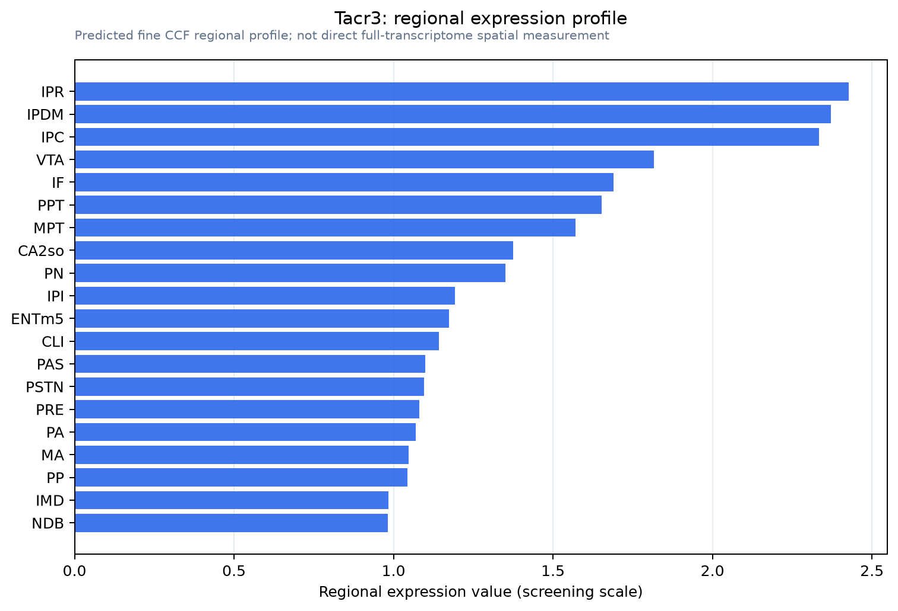

Tacr3
Neuromedin-K receptor (NKR) (NK-3 receptor) (NK-3R) (Neurokinin B receptor) (Tachykinin receptor 3)
Spatial tier: REGION_BIASED · Class: GPCR · Top region: IPR (Interpeduncular nucleus, rostral) · Positive regions: 36/554
43.4Discovery Score
40.2Targetability Score
CEvidence grade C
What this means: Tacr3: fine CCF profile is region-biased toward IPR (top regions: IPR, IPDM, IPC, VTA, IF); this is a discovery lead, not direct proof.
Direct spatial evidence
MERFISH REGION LOCATOR

Regional expression figure

Predicted WMB × fine-CCF profile; not direct full-transcriptome spatial measurement.
Spatial profile
Evidence and specificity
- Evidence status
- PREDICTED_FINE
- Direct sources
- None; predicted localization only
- Exclusive threshold
- 12 positive regions out of 554
- Spatial specificity
- 0.298
- Top-region fraction
- 0.046
- Filter status
- PASS
Interpretation limits
- Cell-type-to-region projection is imputed expression, not direct spatial measurement.
- Adult reference atlases do not establish stability across age, sex, strain, state, or disease.
- Transcript abundance does not guarantee protein abundance or genetic-tool performance.